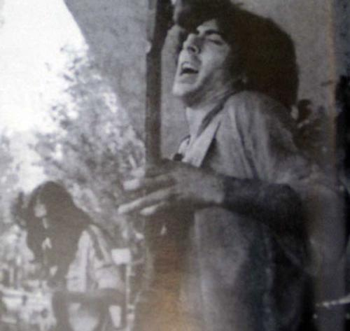
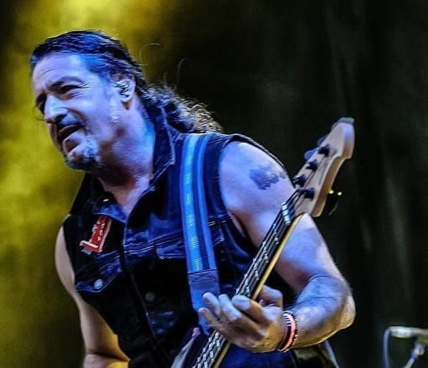
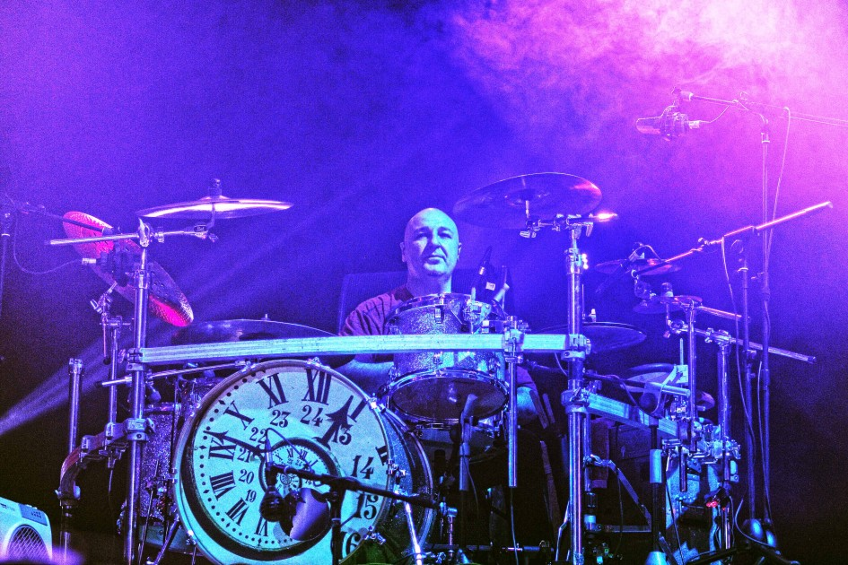

Rosendo Mercado
Voz y guitarra (1985 - 2018)
Icono indiscutible del rock español. Tras liderar formaciones legendarias como Ñu y Leño, inició en 1985 una carrera en solitario que lo consolidó como "el patriarca del rock urbano".

Voz y guitarra (1985 - 2018)
Icono indiscutible del rock español. Tras liderar formaciones legendarias como Ñu y Leño, inició en 1985 una carrera en solitario que lo consolidó como "el patriarca del rock urbano".

Bajo (Etapa inicial)
Bajista fundamental en la génesis del rock urbano. Colaboró estrechamente con Rosendo en su etapa en solitario, dejando su impronta en el álbum Fuera de lugar (1986).

Bajo (1987 - 2018)
El eterno escudero de Rosendo. Se incorporó a la banda durante la grabación de A las lombrices y se convirtió en el bajista más longevo y fiel de su formación.

Batería (1994 - 2018)
Motor rítmico de la banda durante más de dos décadas. Su pegada sólida y precisa es la seña de identidad del sonido de Rosendo desde mediados de los años 90.